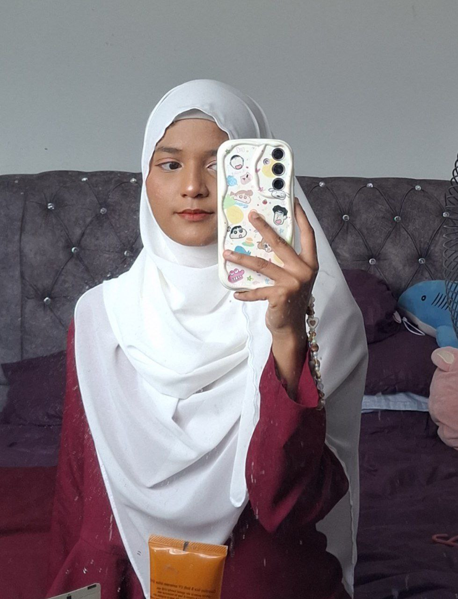

About Me
Was born in Kelantan on April 2004, my parents decided to name me Shadatul Amalin binti Azmi. I am the second youngest in my siblings and total of my siblings is 6 including me. Once I turned 7, my family moved to Selangor and now I live in Selangor with them.

During sem break, I will always find part time job to do as I need money to feed my high maintenance hobby which is going to concert of my favorite artists. It satisfies me a lot when I bought the concert ticket using my own hard- earned money.
I also can't help seeing beautiful skies and snap pictures of them. It gives me a lot of comfort especially when the shot I took turned out looking so god. These are few of my favorite shots.